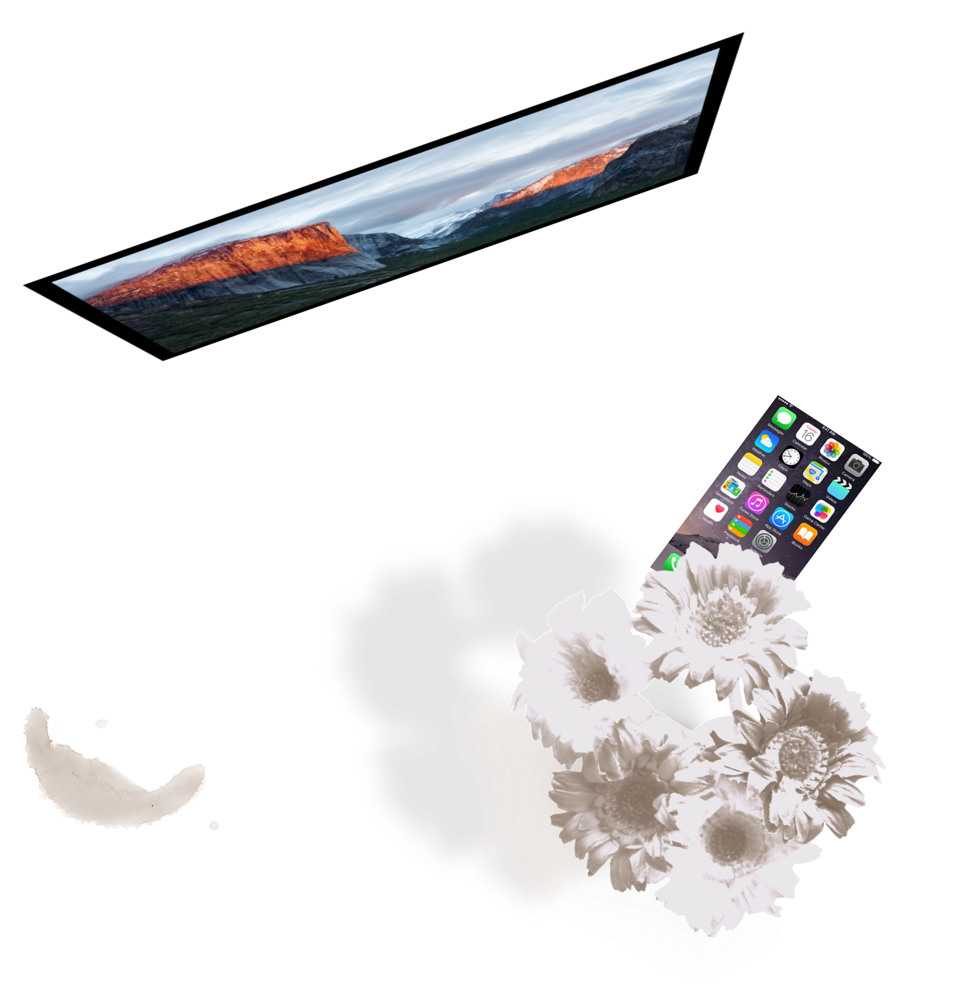
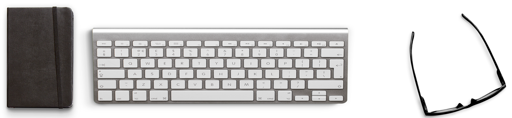
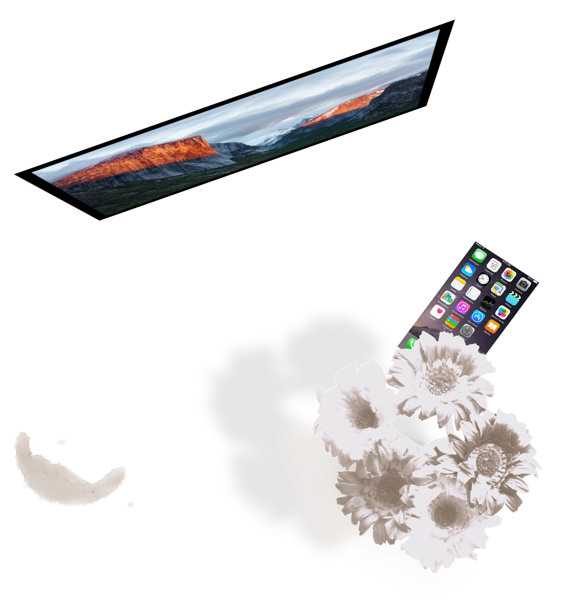
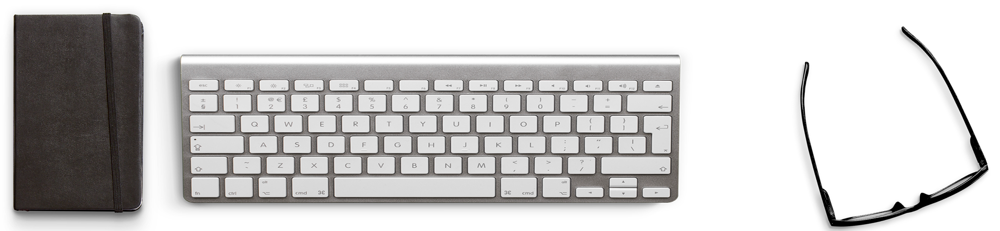

The studio focus on a small, quiet built facility that could be easily duplicated in the whole city to increase the city’s value.
click on the photos to see more
In downtown, saint louis, lots of parking garage are not fully used. Thus, I choose parking garage as a needle. This rebuilt project introduces new activities into a kind of abandoned building to activate the surrounding – sport center, benefiting the workers nearby in day time, people who exercise a lot and people who love night time.

Urban Acupuncture - Model render 3
Urban Acupuncture - Model render 4
Just like another forest park. The bike trail, car path and people movements in this building create a new vertical city in the downtown area but in a much healthier way. What’s more, it breaks the boundary of the city garden and streets. Re-connect the interior volume with the exterior beautiful scene.
This is a small domestic airport design starting from making bottle model. Then build a paper model by refining the form of bottle model. Extraction: the space continues all the time and holes in physical model present openings and tunnels for movements and views.
The design combines the benefits from “bottle” space that their various space quality with the architectural concept that people could see the sky and aircrafts no matter where they are. Structure: exterior surface and interior surface are supported via diagrids and connected by truss.
As in many small towns of the Midwest, the downtown area of Hillsboro, Illinois has nearly no green space while, further out, farm landscapes and housing are wonderful with multiple styles.
Employment and commercial activity is not strong enough to convince young people to live here. To revive its commercial core, to attract young people to come here and to stay here, I propose a new type of residential design to both bridge the social gaps within the town and to activate the downtown area. Conceptually this project establishes a broad typological continuum, gradually transforming architecture and landscape typologies from farm, into the city, and through to downtown. show more...


Extending from the area of single family houses, the landscape as greenspace progresses from courtyards serving several individual dwelling to smaller ones with only one or two families in denser more social arrangements.

The typologies transform from individual farm housing to dwelling units associated with two dimensional courtyards, to three dimensional communities to the three dimensional adaptation of the existing historic buildings downtown.
THIS IS a facade design based on energy consumption at certain location. I propose a façade with adjusted blind skin that it provides clear nice view to look out and natural ventilation to breathe in.


To be specific, various depth of blinds results in different shadows for sun shading strategy and beautiful undulating facade design. Open view could be achieved by moving up and down the blinds.
THIS IS A TEAM WORK FOR urban bench design. We design a bench for a garden at St. Louis Ave and Blair Ave. Urban furniture and hardscape can play an important role in offering a wide range of uses for public spaces. The whole process: design bench, presentation, make CNC wood mold, rubber mold, solidification of concrete elements, and assemble pieces of concrete bench.